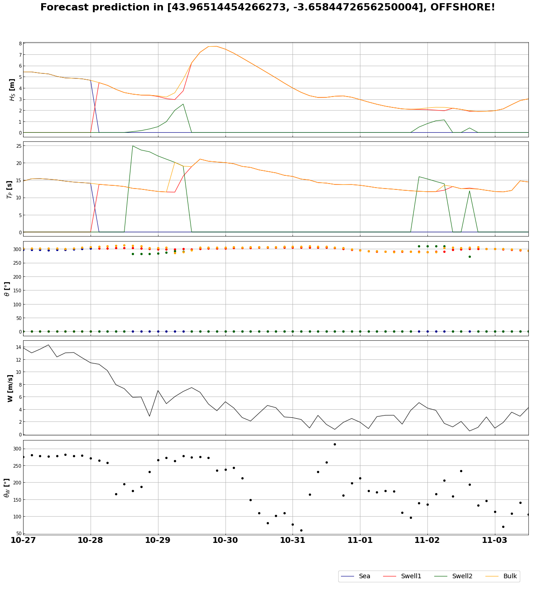
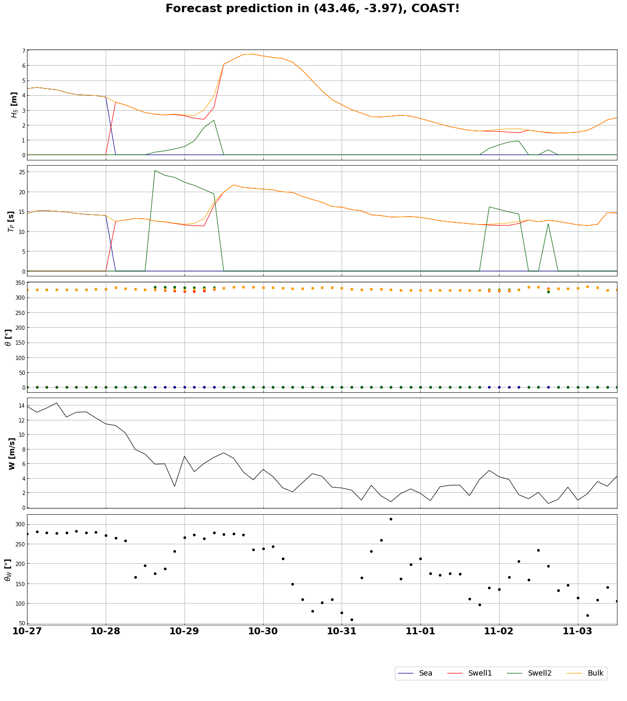

7. Forecast predictions in offshore and coastal point all over the world¶
please contact jtausiahoyal@gmail.com for more information
With this jupyter notebook, forecasts of the waves can be done all over the world just running all the cells below. Data is downloaded from the NOAA website and used for the local predictions. In case the methodology followed wanna be studied in detail, refer to the Forecast class in the repository, and to all the available notebooks as they explain step by step the procedure.
But briefly explained, this notebook download the data, save and plot it and then, reconstruct the predictions using RBF in coastal points using the previously propagated cases with SWAN (refer to the notebooks and the paper in the repo for more information).
# basic imports
import sys
import os
import os.path as op
import datetime
# dev library
sys.path.insert(0, op.join(os.path.abspath('')))
# Forecast module
from forecast import Forecast
date = datetime.date.today() # today or ex: '20200707'
date = date.strftime("%Y%m%d")
images_path = op.join(os.getcwd(), '..', 'images', 'forecast') # save images and GIF
location = (0, 0) # location to see the forecast
forecast = Forecast(date=date,
images_path=images_path,
location=location)
print(forecast.forecast)
Pulling the data from:
https://nomads.ncep.noaa.gov/dods/wave/mww3/20201026/multi_1.glo_30mext20201026_00z
The times with forecast go from 2020-10-27 00:00:00 to 2020-11-03 12:00:00
Generating images and GIF in "path"...
Number of images to plot from the total?
TOTAL: 61, To plot:
8
Plotting time: 2020-10-27 00:00:00...
Plotting time: 2020-10-27 21:00:00...
Plotting time: 2020-10-28 18:00:00...
Plotting time: 2020-10-29 15:00:00...
Plotting time: 2020-10-30 12:00:00...
Plotting time: 2020-10-31 09:00:00...
Plotting time: 2020-11-01 06:00:00...
Plotting time: 2020-11-02 03:00:00...
Plotting time: 2020-11-03 00:00:00...
GIF generated and saved!!
<class 'netCDF4._netCDF4.Dataset'>
root group (NETCDF3_CLASSIC data model, file format DAP2):
title: Multi-grid wave model: Global 30 arc-min grid from 00Z26oct2020 downloaded Oct 26 04:24 UTC
Conventions: COARDS
GrADS
dataType: Grid
history: Mon Oct 26 19:05:29 UTC 2020 : imported by GrADS Data Server 2.0
dimensions(sizes): lat(336), lon(720), time(61)
variables(dimensions): float64 time(time), float64 lat(lat), float64 lon(lon), float32 dirpwsfc(time,lat,lon), float32 htsgwsfc(time,lat,lon), float32 perpwsfc(time,lat,lon), float32 swdir_1(time,lat,lon), float32 swdir_2(time,lat,lon), float32 swell_1(time,lat,lon), float32 swell_2(time,lat,lon), float32 swper_1(time,lat,lon), float32 swper_2(time,lat,lon), float32 ugrdsfc(time,lat,lon), float32 vgrdsfc(time,lat,lon), float32 wdirsfc(time,lat,lon), float32 windsfc(time,lat,lon), float32 wvdirsfc(time,lat,lon), float32 wvhgtsfc(time,lat,lon), float32 wvpersfc(time,lat,lon)
groups:
new_location = forecast.select_precise_location()
Move the marker to the exact position:
forecast_nc, forecast_data = forecast.select_region(marker=new_location,
delta_lon=0.8,
delta_lat=0.8,
zoom=8)
New location in [43.96514454266273, -3.6584472656250004]!!
These are the coordinates in the selected region:
[43.5 44. 44.5]
[356. 356.5 357. ]
Saving the data in the shown region...
<xarray.Dataset>
Dimensions: (lat: 3, lon: 3, time: 61)
Coordinates:
* time (time) datetime64[ns] 2020-10-27 ... 2020-11-03T12:00:00
* lat (lat) float64 43.5 44.0 44.5
* lon (lon) float64 356.0 356.5 357.0
Data variables:
Hsea (time, lat, lon) float32 4.02 9.999e+20 ... 9.999e+20 9.999e+20
Tpsea (time, lat, lon) float32 14.88 9.999e+20 ... 9.999e+20 9.999e+20
Dirsea (time, lat, lon) float32 306.66998 9.999e+20 ... 9.999e+20
Hswell1 (time, lat, lon) float32 9.999e+20 4.11 4.16 ... 3.25 3.1899998
Tpswell1 (time, lat, lon) float32 9.999e+20 14.63 ... 14.34 14.389999
Dirswell1 (time, lat, lon) float32 9.999e+20 306.4 ... 290.5 291.19998
Hswell2 (time, lat, lon) float32 9.999e+20 9.999e+20 ... 9.999e+20
Tpswell2 (time, lat, lon) float32 9.999e+20 9.999e+20 ... 9.999e+20
Dirswell2 (time, lat, lon) float32 9.999e+20 9.999e+20 ... 9.999e+20
Hs (time, lat, lon) float32 4.02 4.11 4.16 ... 3.3 3.25 3.1899998
Tp (time, lat, lon) float32 14.88 14.63 14.44 ... 14.34 14.389999
Dir (time, lat, lon) float32 309.27 307.78 306.93 ... 291.78 292.65
Uwind (time, lat, lon) float32 11.65 7.0699997 10.04 ... -4.5 -4.1
Vwind (time, lat, lon) float32 -1.64 0.82 -0.16 ... 0.90999997 1.89
WindSpeed (time, lat, lon) float32 11.7699995 7.12 10.04 ... 4.5899997 4.52
DirWind (time, lat, lon) float32 278.03 263.41 ... 101.409996 114.71
From the region selected, the closest point will be choosen. Wanna change?
True | False (let box empy) :
Saving the dataframe with the closest coordinates...
DONE!!
forecast.plot_results(forecast=forecast_data,
coast=False)

Important: In the case that NO propagations have been done using SWAN, then the reconstruction in coast cannot be performed, and the notebook ends here.
p_data_swan = op.join(os.getcwd(), '..', 'data', 'projects-swan')
# -------------- EDIT THIS PART --------------------------------------------- #
name = 'SDR' # used name in the SWAN section
resolution = str(0.0024) # used resolution in the SWAN section
num_cases = str(300) # num cases run in SWAN
# --------------------------------------------------------------------------- #
# Example coordinates for the forecast reconstruction:
# Sardinero 43.5, -3.75
# Liencres 43.46, -3.97
# Jeffrey's Bay -34.0 24.98
forecast_recon = forecast.forecast_reconstruction(p_data_swan=p_data_swan,
forecast_data=forecast_data,
name=name,
resolution=resolution,
num_cases=num_cases)
SUBSETS:
SEA
<class 'pandas.core.frame.DataFrame'>
RangeIndex: 300 entries, 0 to 299
Data columns (total 3 columns):
# Column Non-Null Count Dtype
--- ------ -------------- -----
0 hs 300 non-null float64
1 per 300 non-null float64
2 dir 300 non-null float64
dtypes: float64(3)
memory usage: 7.2 KB
None
SWELL
<class 'pandas.core.frame.DataFrame'>
RangeIndex: 300 entries, 0 to 299
Data columns (total 3 columns):
# Column Non-Null Count Dtype
--- ------ -------------- -----
0 hs 300 non-null float64
1 per 300 non-null float64
2 dir 300 non-null float64
dtypes: float64(3)
memory usage: 7.2 KB
None
Select the desired point to reconstruct as it is given in Google Maps:
Latitude location to obtain the forecast reconstruction: 43.46
Longitude location to obtain the forecast reconstruction:
-3.97
TARGETS:
SEA
<class 'pandas.core.frame.DataFrame'>
RangeIndex: 300 entries, 0 to 299
Data columns (total 5 columns):
# Column Non-Null Count Dtype
--- ------ -------------- -----
0 hs 300 non-null float32
1 per 300 non-null float32
2 perM 300 non-null float32
3 dir 300 non-null float32
4 spr 300 non-null float32
dtypes: float32(5)
memory usage: 6.0 KB
None
SWELL
<class 'pandas.core.frame.DataFrame'>
RangeIndex: 300 entries, 0 to 299
Data columns (total 5 columns):
# Column Non-Null Count Dtype
--- ------ -------------- -----
0 hs 300 non-null float32
1 per 300 non-null float32
2 perM 300 non-null float32
3 dir 300 non-null float32
4 spr 300 non-null float32
dtypes: float32(5)
memory usage: 6.0 KB
None
Forecast in the selected region has the shape:
<class 'pandas.core.frame.DataFrame'>
DatetimeIndex: 61 entries, 2020-10-27 00:00:00 to 2020-11-03 12:00:00
Data columns (total 18 columns):
# Column Non-Null Count Dtype
--- ------ -------------- -----
0 Hsea 61 non-null float32
1 Tpsea 61 non-null float32
2 Dirsea 61 non-null float32
3 Hswell1 61 non-null float32
4 Tpswell1 61 non-null float32
5 Dirswell1 61 non-null float32
6 Hswell2 61 non-null float32
7 Tpswell2 61 non-null float32
8 Dirswell2 61 non-null float32
9 Hs 61 non-null float32
10 Tp 61 non-null float32
11 Dir 61 non-null float32
12 Uwind 61 non-null float32
13 Vwind 61 non-null float32
14 WindSpeed 61 non-null float32
15 DirWind 61 non-null float32
16 lat 61 non-null float64
17 lon 61 non-null float64
dtypes: float32(16), float64(2)
memory usage: 5.2 KB
None
Performing RFB reconstruction...
ix_scalar: 0, optimization: 4.98 | interpolation: 0.00
ix_scalar: 1, optimization: 9.28 | interpolation: 0.00
ix_scalar: 2, optimization: 6.29 | interpolation: 0.00
ix_scalar: 4, optimization: 9.53 | interpolation: 0.00
ix_directional: 3, optimization: 15.76 | interpolation: 0.01
ix_scalar: 0, optimization: 5.86 | interpolation: 0.01
ix_scalar: 1, optimization: 10.84 | interpolation: 0.00
ix_scalar: 2, optimization: 10.85 | interpolation: 0.00
ix_scalar: 4, optimization: 9.87 | interpolation: 0.00
ix_directional: 3, optimization: 15.00 | interpolation: 0.01
ix_scalar: 0, optimization: 5.40 | interpolation: 0.00
ix_scalar: 1, optimization: 9.99 | interpolation: 0.00
ix_scalar: 2, optimization: 10.36 | interpolation: 0.00
ix_scalar: 4, optimization: 11.35 | interpolation: 0.00
ix_directional: 3, optimization: 14.76 | interpolation: 0.01
Saving the data in path="data/reconstructed/.." ...
Hsea Tpsea Dirsea Hswell1 Tpswell1 \
time
2020-10-27 00:00:00 4.440143 14.500299 326.429110 0.000000 0.000000
2020-10-27 03:00:00 4.519804 15.152451 326.552159 0.000000 0.000000
2020-10-27 06:00:00 4.437504 15.209333 326.508203 0.000000 0.000000
2020-10-27 09:00:00 4.358439 15.040860 326.267339 0.000000 0.000000
2020-10-27 12:00:00 4.176344 14.851967 326.207875 0.000000 0.000000
... ... ... ... ... ...
2020-11-03 00:00:00 0.000000 0.000000 0.000000 1.520127 11.622353
2020-11-03 03:00:00 0.000000 0.000000 0.000000 1.649642 11.446942
2020-11-03 06:00:00 0.000000 0.000000 0.000000 1.956715 11.758897
2020-11-03 09:00:00 0.000000 0.000000 0.000000 2.340782 14.719731
2020-11-03 12:00:00 0.000000 0.000000 0.000000 2.485509 14.632953
Dirswell1 Hswell2 Tpswell2 Dirswell2 Hs \
time
2020-10-27 00:00:00 0.000000 0.0 0.0 0.0 4.440143
2020-10-27 03:00:00 0.000000 0.0 0.0 0.0 4.519804
2020-10-27 06:00:00 0.000000 0.0 0.0 0.0 4.437504
2020-10-27 09:00:00 0.000000 0.0 0.0 0.0 4.358439
2020-10-27 12:00:00 0.000000 0.0 0.0 0.0 4.176344
... ... ... ... ... ...
2020-11-03 00:00:00 331.894286 0.0 0.0 0.0 1.520127
2020-11-03 03:00:00 335.861490 0.0 0.0 0.0 1.649642
2020-11-03 06:00:00 333.650244 0.0 0.0 0.0 1.956715
2020-11-03 09:00:00 324.718630 0.0 0.0 0.0 2.340782
2020-11-03 12:00:00 325.268331 0.0 0.0 0.0 2.485509
Tp Dir Uwind Vwind WindSpeed \
time
2020-10-27 00:00:00 14.500299 326.429110 13.759999 -1.28 13.820000
2020-10-27 03:00:00 15.152451 326.552159 12.820000 -2.31 13.020000
2020-10-27 06:00:00 15.209333 326.508203 13.469999 -1.98 13.610000
2020-10-27 09:00:00 15.040860 326.267339 14.210000 -1.70 14.309999
2020-10-27 12:00:00 14.851967 326.207875 12.240000 -1.78 12.370000
... ... ... ... ... ...
2020-11-03 00:00:00 11.622353 331.894286 -0.890000 0.38 0.960000
2020-11-03 03:00:00 11.446942 335.861490 -1.750000 -0.66 1.870000
2020-11-03 06:00:00 11.758897 333.650244 -3.350000 1.06 3.520000
2020-11-03 09:00:00 14.719731 324.718630 -1.850000 2.20 2.870000
2020-11-03 12:00:00 14.632953 325.268331 -4.110000 1.10 4.260000
DirWind
time
2020-10-27 00:00:00 275.329987
2020-10-27 03:00:00 280.229980
2020-10-27 06:00:00 278.369995
2020-10-27 09:00:00 276.809998
2020-10-27 12:00:00 278.279999
... ...
2020-11-03 00:00:00 113.049995
2020-11-03 03:00:00 69.290001
2020-11-03 06:00:00 107.610001
2020-11-03 09:00:00 139.970001
2020-11-03 12:00:00 104.949997
[61 rows x 16 columns]
SAVED!!!
forecast.plot_results(forecast=forecast_recon,
coast=True)
